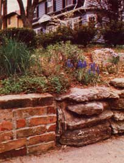
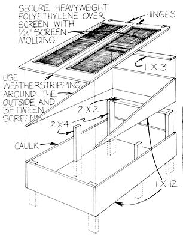
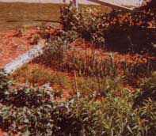
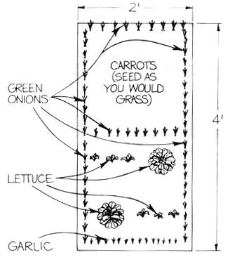
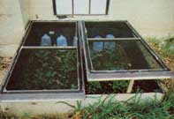

Don't let frequent moves, or lack of a garden plot, prevent you from growing your own food. A wealth of herbs and vegetables can thrive-all year long-in some very unlikely little spaces.
Do you want to start an organic garden but fear that you may be moving by midsummer? Do you pine for a farm but find yourself stuck on a quarter-acre suburban lot? Do the requirements of your current job make living in the city a necessity?
If any of these problems sound all too familiar to you, don't despair, because city folks and modern nomads don't have to forgo the joys of growing fresh produce. In fact, even if the empty moving van has just pulled out of the driveway of your new home, it's not too soon to make a start toward food selfsufficiency, because my gardening method requires only as much effort as you want to put into it. The workload can then expand in small, manageable chunks as more time and energy become available or as you decide you're likely to stay put long enough to justify added effort.
Of course, many homes seem to have too little yard space for a garden. Well, we faced that problem three years ago, when we were transferred from our suburban home to a house in a metropolis. The new abode was located on a city-bound lot only 34 feet wide, and the back yard was almost completely shaded by 50-year-old trees (there was a sunny strip right next to the house, though). The site was, nevertheless, just perfect for a "patchwork" garden.
Like a patchwork quilt, you see, this type of plot is made up of a number of separate minigardens. And-like the components of a homemade quilt-each little growing space would likely seem nearly worthless by itself. What good, for example, is a 2' X 4' patch of land ... or a strip of sunlit soil in a shady back yard?
Well, the truth is, a patchwork garden-made up of such small available plots-can be immensely productive. In ours, for example, a sunny spot bordering the street provides all the fresh kitchen herbs we can use, plus dried ones for gift giving at Christmas. The small, sunny backyard strip I mentioned produces peas in the spring ... a summer full of tomatoes ... a seemingly endless trickle of broccoli (which we accumulate in mealsized portions and freeze) ... and even a pumpkin or two for Halloween! A semishady patch in the same area yields all the green onions, lettuce, and spinach we can eat ... and each of these little microenvironments allows us to experiment with seed varieties, plant growth requirements, and companion plantings.
Manageability is another advantage offered by patchwork gardens. On several occasions in the past, our family has endured midsummer transfers from one state to another, and-during those times-we believed it was impractical to try to start a garden at our new home. July, we thought, was too late to plant much of anything, and-busy with getting settled-we lacked time to cultivate a large plot, anyway. I've since learned, though, that a small garden patch can be started almost anytime. It takes little time, for instance, to improve heavy clay soil when the plot in question is only 3' X 3'. (just remove 8" to 10" of the dirt and lighten it by mixing one part of soil with one part of sand and one part of mulch, such as leaves, straw, or dry grass clippings ... then fill the patch with the mixture.)
Furthermore, tomato seedlings planted in July can produce ripe fruit before frost in most places, while greens, green onions, fall vegetables (such as Chinese cabbage), and herbs (for repotting indoors for the winter) can often be planted as late as August.
The patchwork method also offers the gardener a chance to work with a variety of terrains not usually found in more conventional plots. During the heat of the day, for example, I putter in the cool of the semishade out back ... but after heavy rains when my other patches are soggy, I traipse up to the unshaded hillside and work where the ground is a good bit less damp.
Then, too, each patch of my organic quilt exhibits its own distinctive personality, composed of its size, its location, and the plants that thrive in it. The green, partially shaded patch is cool and moist. There, I keep a sharp eye out for slugs, and bait the area with beer poured in shallow, foil-lined depressions in the ground. The sunny, front-yard herb plot is a joy to harvest, early on a summer morning ... as the evaporating dew fills the air with the odors of pungent basil and sweet thyme. My high-and-dry hillside tract is less tame. Rabbits compete for my beet greens there, and moles undermine root crops and match wits with me in their attempts to circumvent my traps. It's no place to be at noontime during a Cincinnati summer either ... but the tomatoes, beans, peas, and corn thrive there with a vigor unmatched in my other plots.
Another advantage of this form of cultivating is that it allows you to "fine tune" plants to make the best-and most attractive-uses of space and location ... perhaps by interspersing colors and patterns to create a harmonious whole. An herb and flower patch can display mounds of blue green thyme contrasted with snowy gray dusty miller ... spikes of chives can set off graceful marjoram ... Thumbelina zinnias will shine in front of a mass of basil ... and gray green sage can provide a fitting backdrop for grape hyacinths.
The best feature of this garden concept, however, is that you can begin to piece together a patchwork garden almost anywhere. Here are some examples, just to whet your imagination.
Even an area as small as 2' X 4' can be used to grow a surprising quantity of vegetables. Carrots, green onions, chives, garlic, lettuce, and parsley, for example, will all provide a good harvest from a tiny space. Fig.1 diagrams a sample plot containing lettuce, carrots, green onions, and garlic. Note that the lettuce plant that's given the most space in each row will mature earlier than the other three ... so harvest that one first and replace it with the middle plant of the remaining set, to give all the lettuce more room to mature. You can then either pick it as heads, or uniformly remove the outer leaves from each plant as needed.
Your "tiny patch" carrots will need periodic thinning. When doing this, leave the diameter of a good-sized carrot between plants. Also, be sure to leave a few to overwinter under a thick mulch, just for the fun of harvesting some early carrots the following spring.
The garlic can be picked in the fall, after the leaves dry up. Here, too, you might want to let some overwinter in the ground. In the spring, when these begin to grow again, separate and replant them-with the lettuce and onions-on the opposite side of the patch, and likewise rotate the carrot crop. Other small plots, containing different vegetables, can be designed in the same way.
Herbs-many of which thrive in relatively poor soil-are wonderful candidates for inclusion in a new garden ... especially since they tend to need less soil preparation and regular care than do vegetables. You should, though, avoid tall herbs if you're planting in your front yard and want to retain a cultivated took. (Sorrel and dill, for example, can easily top the 4-foot mark, and tend to look unruly.) Good choices include marjoram, chives, borage, garlic chives, flat and curly parsley, coriander, horehound, basil, rosemary, fennel, sage, and all the thymes. Harvest your thyme, marjoram, and basil frequently to promote bushiness in the plants ... and be sure to place borage, sage, rosemary, horehound, and fennel in back of the others, since they're among the taller herbs.
To prepare the soil for our front-yard herb patch, we removed the sod from a hilly portion of the lawn and lightened the clay beneath it by adding 3" of a mixture of twothirds sand and one-third compost, digging it in 6 inches deep. Then-the first spring-we sowed basil, sage, thyme, fennel, coriander, anise, marjoram, dill, parsley, and sorrelseeds ... planted nursery-started chives, horehound, and rosemary ... and kept the area moist until they were all growing well. We thinned the herbs lightly and harvested their foliage frequently during the summer. Unfortunately, the anise never germinated, and the sorrel and dill were so tall we eventually moved them to the back yard. The rest, however, did beautifully!
This year, the thyme, chives, sage, and horehound-interspersed with early-spring-flowering bulbs-came up with no help from us at all. The other herbs were resown as annuals, along with Thumbelina zinnias and dusty miller to add color to the plot.
If your best growing space faces the street, you might want to screen off an area by planting bird-attracting bushes, such as pyracan tha, across a decorative fence section. Then sow low-growing annuals on the street side of the fence . . and cultivate vegetables behind the natural screen. [EDITOR'S NOTE. For more information on the use of trees and shrubs as borders, turn to page 120.]
A simple cold frame can be built from two old screens (see Fig. 2). Paint all of the inside surfaces black to absorb the sunlight and line the back wall with water-filled milk jugs to collect the heat and radiate it back at night. Plant broccoli, lettuce, basil, and even a few tomatoes right in the ground inside the cold frame early in the spring. As the season progresses and the plants reach the roof, remove the screens and use the cold frame as ordinary garden space until fall.
You can create your own microclimate by planting vegetables close together on a dry patch of earth, and mulching them heavily. We grow tomatoes, peppers, and marigolds on our arid, hilly plot ... planting them on 18" centers along a 4' X 25' strip Underneath these, we sow lettuce ... which thrives, since the foliage above shields it from the hot sun.
While most vegetables require sunshine, we've had modest success with some varieties in partial shade. Last year one 10' X 10' plot produced broccoli, lettuce, soybeans, spinach, onions, and even a few tomatoes and squash. And though its harvest was generally smaller and later than the yield from patches in sunny areas, the vegetables were still very tasty. We've found the best choices for a semishady patch to be greens, lettuce, green onions, broccoli, and parsley.
Potatoes are wonderful for new gardens, because they require little or no soil preparation. Just cut seed potatoes into 2" chunks, with at least one eye each, and dry them overnight. Plant one piece every foot, burying it about 6 inches deep. Then whenever you see a stem peeking out, pile mulch around the foliage. (Don't cover the leaves completely, though. Instead, push the stems together to center the greenery, and mulch around them.) After the blossoms fall, dig (gently) for a few new potatoes in the bottom part of the mulch, and harvest the rest of the tubers when the tops die down. These spuds will be located in the mulch and in the upper layers of soil around the plants. Once the harvest is over, dig the mulch into the patch, and the soil will be light enough for immediate planting the following spring.
Pumpkins need sun, enriched soil, and "elbow room". The vines can, however, be allowed to sprawl over a neighboring semishady or grassy area. We grew two closely spaced pumpkin hills in a 2' X 4' patch in our front yard. In each hill, which was made of almost pure compost, we planted ten Big Max seeds. After they germinated, we thinned them to three plants per hill and allowed the vines to ramble onto the parched lawn. They provided a patch of green on the edge of an otherwise sunburned front yard, as well as several good-sized Halloween jack-o'-lanterns.
Our June-bearing strawberries grow in a 2' X 10' area along a cement walk. We removed the sod along the walk ... enriched the top 8" by working in 2" of compost and 2" of sand ... and set the strawberry plants in staggered rows 9 inches to 12 inches apart. (Be sure the crowns are above the soil level, and mulch the area with straw to keep the fruit off the ground.)
Find a sunny corner for your asparagus patch, then dig a 1-foot-deep trench, 3 feet. long and 3 feet wide ... sprinkle the bottom with bone meal . . . and add 3" of compost. Place one-year-old asparagus plants 1 foot apart in the pit, and cover the spread-out, fingerlike roots with fairly light soil. (If you're working in heavy clay, incorporate some mulching material into the earth before filling the trench.)
Since it takes two to three years for such a patch to produce usable cuttings, get your asparagus growing just as soon as possible. After all, even if you move before the plants begin to bear, the next tenant will enjoy your efforts. And who knows, perhaps someone is putting in a bed of asparagus for wu right now.
In fact, it seems to me that those of us who do frequently relocate have a unique opportunity. We can create a network of rental-property patchwork gardens. As we urban nomads (serving as modern Johnny Appleseeds) move across the land, rescuing our patches of city and suburban lots from litter and decay, we can take satisfaction in reclaiming valuable portions of our country for pro ductive service. After all, as we piece together this vast organic quilt, we're creating a precious inheritance ... a healthy, workable system of home food production.
|
 |
 |
 |
|
 |
 |
|